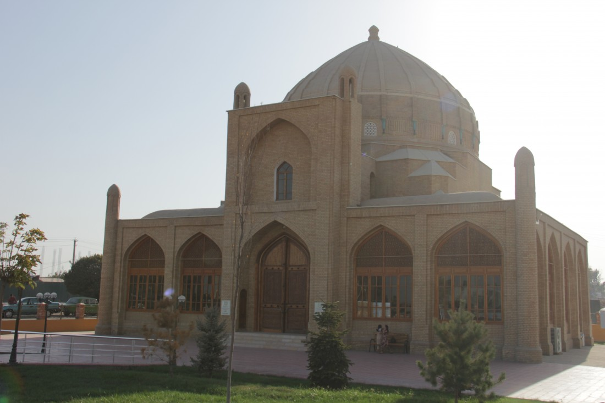
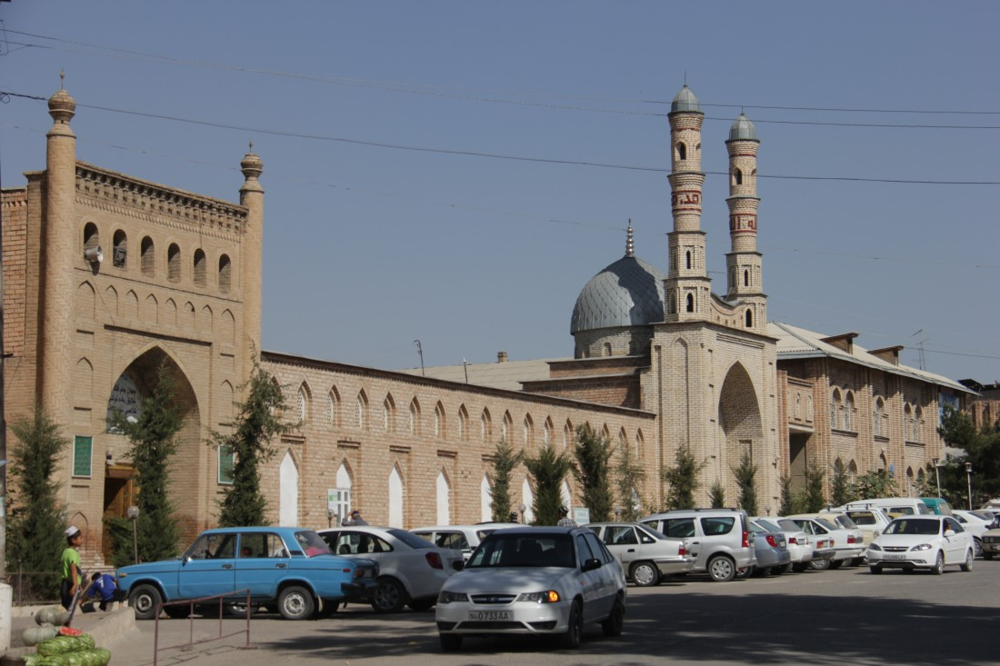

Наманган - Цветущий край

Климат
Зима в Намангане довольно мягкая и минусовая температура бывает не часто явление, но может и случится резкое похолодание. Не пренебрегайте теплыми вещами при поездке. Летом стоит стабильная жара, во врем которой нужно обязательно носить головной убор и как можно больше пить воды.
Подарки и сувениры
В городе во все времена было много ремесленников, которые изготавливают необычные сувениры. Гуляя по Намангану можно встретить множество мастерских и каждая из них уникальна по-своему. Мастера по гончарному делу создают расписные тарелки с уникальными рисунками присущими только этому городу. Местная ткань отличается особым качеством, так как в городе есть хлопко-перерабатывающие учреждения, в связи с чем стоимость на изделия из 100-процентного хлопка очень выгодная! И конечно же не забываем про город Чуст, что находится в Наманганской области. В самом центре города с незапамятных времен располагается целый квартал кузнецов, где создают знаменитые на весь мир своей практичностью ножи. Техника сознания этих уникальных ножей пришла к нам через века. На каждый нож наносятся место производства и имя изготовившего его мастера, а рукоятки создают с особым вдохновением! Они делаются любого вида, от самых простых до неприлично дорогих, для особых ценителей. На обычные рукоятки идет пластмасса, оргстекло или твердые породы деревьев. Дорогие же рукоятки делают из слоновой, сайгачьей или оленьей кости, инкрустированные перламутром, серебром или цветными камнями приковывают взгляд, а металлические, богато украшенные чеканкой и гравировкой вызывают живейший восторг.
Кухня
Основным блюдом всех городов Узбекистана является плов. Если Вы проедете по всем регионам нашей страны, то удивитесь на сколько разнообразно готовится это блюдо. В каждом городе люди будут убеждать Вас, что плов у них самый лучший в стране! И только попробовав все, Вы сможете сами понять какой из них Вам нравится больше остальных. Бухарский плов или как его еще называют, Оши-Софи, считается диетическим из-за способа приготовления. Готовится он своеобразно, его не перемешивают в отличии от андижанского или ташкентского. Еще одной особенность является то, что он готовится в только в медном казане. К бухарским блюдам еще относятся такие блюда как халиса или каиш. Еще больше про Узбекскую Кухню Вы сможете прочитать по этой ссылке.
История
Город получил свое название от словосочетания «Намак кан», что в переводе с персидского означает «соляная копь». Археологи нашли следы древних селений, которые располагались здесь еще в начале нашей эры. В честь соленной копи город назвали потом, что на его территории находилось озеро, в котором местные жители добывали поваренную соль.
Статус города Наманган получил в 1610 году, а через 10 лет в него переехали люди из разрушенного землетрясением, древнего центра Ферганской долины, города Ахсикента. Наманган всегда славился как ремесленнический город. На его территории жили лучшие ткачи, гончары, кузнецы, медники и ювелиры. Как и по всей Ферганской долине, в городе занимались торговлей и земледельчеством. В то время, когда Наманган входил в Кокандское ханство он очень часто подвергался нападениям, что сильно навредило его экономике. В 1821 году в городе прорыли новый канал, названный Янгиарык. Он сыграл очень важную роль в увеличении потока воды в город. Сегодня это крупный город с быстро растущей экономикой, основными направлениями которой являются шелководство, обработка хлопка, виноделие и химическая промышленность.